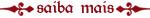

Venha conhecer um pouco mais da vida medieval neste castelo construído em Gramado/RS.

Dentro do museu você também conhece o trabalho cuteleiros brasileiros.
Mapas heráldicos, montagem de árvore genealógica, encontros de família, brasões para instituições e mais.
Brasões de Família
Pesquisando e confeccionando brasões desde 1965, aqui você pode descobrir a origem e a história de sua família.
Estamos disponibilizando na internet toda a lista de sobrenomes que já foi pesquisando ao longo desses 44 anos de trabalho.
pesquisar
Show de rua em Berna (Suiça)
Como já mencionei aqui, em 2008 eu fiz uma viajem “mochilão” por 15 países da Europa aonde retornou com várias fotos e vídeos.
Um desses países foi a Suíça (falarei mais sobre ela outro dia) e um dos vídeos que fiz foi esse show de rua com gaitas de foles que esses 2 caras fizeram para arrecadar um dinheiro. A música deles é tão boa quanto a do Soar Patrol...
Show de rua em Berna (Suiça)
Como já mencionei aqui, em 2008 eu fiz uma viajem “mochilão” por 15 países da Europa aonde retornou com várias fotos e vídeos.
Um desses países foi a Suíça (falarei mais sobre ela outro dia) e um dos vídeos que fiz foi esse show de rua com gaitas de foles que esses 2 caras fizeram para arrecadar um dinheiro. A música deles é tão boa quanto a do Soar Patrol...
Show de rua em Berna (Suiça)
Como já mencionei aqui, em 2008 eu fiz uma viajem “mochilão” por 15 países da Europa aonde retornou com várias fotos e vídeos.
Um desses países foi a Suíça (falarei mais sobre ela outro dia) e um dos vídeos que fiz foi esse show de rua com gaitas de foles que esses 2 caras fizeram para arrecadar um dinheiro. A música deles é tão boa quanto a do Soar Patrol...